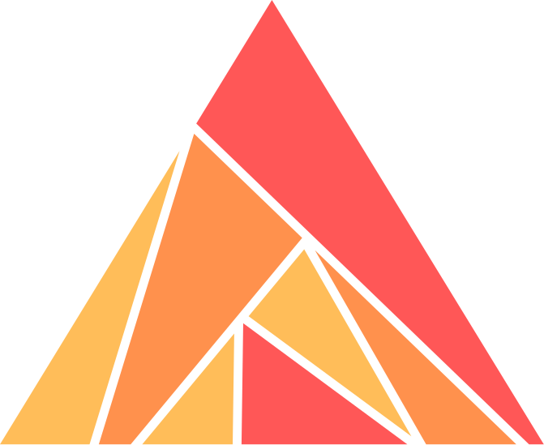

Ash FrameworkUse Ash and get an MCP for free
Your actions are already the tools. Model your domain, derive the rest.

Ash FrameworkYour actions are already the tools. Model your domain, derive the rest.
tool :publish_post, Post, :publish, title: "Publish a post"
{ "name": "publish_post", "title": "Publish a post", "inputSchema": { … }}